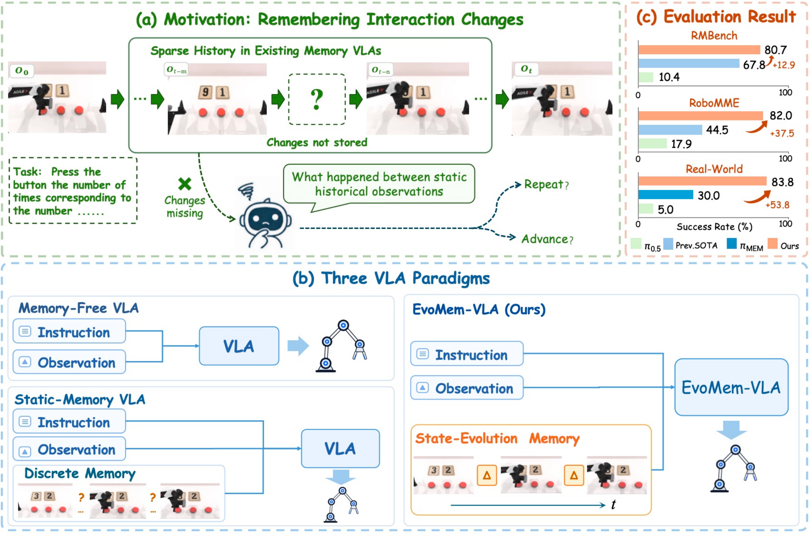
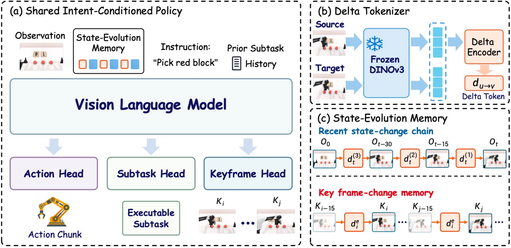
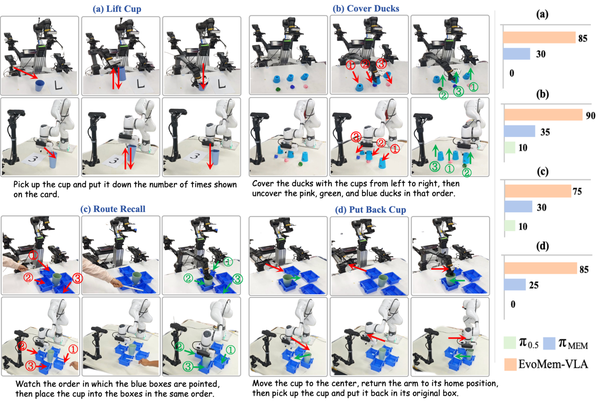
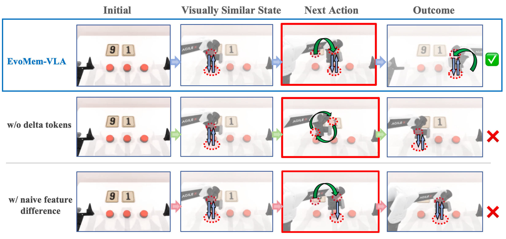

Remembering interaction changes
EvoMem-VLA
State-Evolution Memory for
Long-Horizon Robot Manipulation
1Xi'an Jiaotong University2The Hong Kong University of Science and Technology (Guangzhou)3The Chinese University of Hong Kong4Xbotics Embodied AI Community
† Project lead · * Corresponding author
Remember what changed, not just what was seen.
EvoMem-VLA pairs historical observations with learned change tokens, giving robot policies explicit evidence of past interactions.
80.7%RMBench+12.9 percentage points
82.0%RoboMME+37.5 percentage points
83.8%Real-world tasks+53.8 percentage points
Improvements over the best compared prior method in each evaluation setting.
Real-world demonstrations
Four tasks. Two robot embodiments.
Counting, remembering identities, following demonstrated order, and recalling an object's original location.
Lift Cup
Lift the cup the number of times shown on the card, then put it back.
The cup returns to a similar pose after each lift. The robot must remember how many repetitions are complete.
85.0%Average success rate
20 representative successful recordings. Use the task tabs and demo selectors to explore all clips. Recordings from different views are not synchronized. Success rates are averaged across the two embodiments (10 evaluation episodes per task per robot), not estimated from these videos.
Browse all 20 recordingsThe idea
From discrete states to remembered changes.
Sparse history tells a policy what was visible. State-evolution memory also preserves how observed states changed during interaction.

Read the abstract
Most vision-language-action (VLA) models rely on current observations and lose task-relevant evidence once it leaves view, limiting performance on long-horizon, memory-dependent tasks. Existing efforts incorporate compressed historical features or sparse visual keyframes. However, isolated snapshots can leave the policy uncertain about what changed during past interactions and which action should follow. To overcome this limitation, we propose EvoMem-VLA, which constructs state-evolution memory by explicitly encoding and retaining observed changes between historical states. These change representations preserve evidence of interaction outcomes, allowing the policy to track task progress beyond isolated snapshots. Specifically, we introduce conditional delta tokenization to encode ordered frame pairs into directional, source-conditioned delta tokens, each associated with its corresponding state evidence. A shared VLM backbone supports task-adaptive routing: normal long-horizon tasks follow a direct action route, whereas multi-stage tasks use a subtask route that generates an executable subtask as an additional input for action generation. With a single jointly trained policy for each simulation benchmark, EvoMem-VLA achieves success rates of 80.7% on RMBench, 82.0% on RoboMME and 83.8% across four real-world tasks spanning two robot embodiments. These results represent substantial improvements over the previous state of the art in all three evaluation settings.
Method
Turn observed changes into memory.
Conditional delta tokenization, multi-scale state-evolution memory, and task-adaptive routing in one VLA.

Encode the change
A conditional Delta Tokenizer uses frozen DINOv3 features to encode an ordered source–target frame pair into a compact change token.
Remember it with the state
Three recent delta-token groups are paired with visual states. When enabled, keyframe memory retains earlier state–change evidence beyond the recent window.
Condition the next action
A shared VLM uses memory, instruction, and the current observation. Multi-stage tasks first generate an executable subtask; other tasks predict actions directly.
Evaluation
Across benchmarks. Across embodiments.
One jointly trained policy per simulation benchmark, and one policy per real-world robot embodiment.
RMBench
9 bimanual manipulation tasks
+12.9 pointsRoboMME
16 memory-dependent tasks
+37.5 pointsReal world
4 tasks on 2 robot embodiments
+53.8 pointsSuccess rates (%). “Previous best” denotes the best compared prior method reported in the paper. Improvements are percentage-point differences.

What makes the difference?
Explicit change evidence matters.
Controlled RMBench ablations test delta tokenization and subtask conditioning within the same framework.
| Method | M(1) | M(n) | Overall |
|---|---|---|---|
| EvoMem-VLA | 84.0 | 76.5 | 80.7 |
| w/ naive feature difference | 52.0 | 41.0 | 47.1 |
| w/o subtask route | 84.0 | 33.0 | 61.3 |
| w/o delta tokens | 59.0 | 44.0 | 52.3 |
| w/o delta tokens & subtask route | 55.0 | 31.0 | 44.3 |
M(1) tasks require a single task-relevant past observation; M(n) tasks require information from multiple past observations. All variants use the same training and evaluation protocol.
Similar observations. Different next actions.
In this Press Button episode, the robot must press the left button nine times, the middle button once, then the rightmost termination button. Remembering completed interactions is essential to switching at the correct time.

EvoMem-VLACompletes the instructed sequence.
Without delta tokensFollows an incorrect trajectory and returns to the left button.
Naive feature differenceRepeats the middle-button press instead of proceeding to termination.
Citation
BibTeX
@misc{na2026evomemvla,
title = {EvoMem-VLA: State-Evolution Memory for
Long-Horizon Robot Manipulation},
author = {Yuheng Na and Zhide Zhong and Junjie He and Junfeng Li
and Haodong Yan and Jiaan Wang and Jiaquan Zhu
and Yangyang Zheng and Tianyu Huang and Haoang Li},
year = {2026},
url = {https://yuhengna.github.io/EvoMem-VLA/}
}